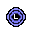
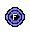
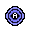

Transportation - Teleportation
Teleport Spells | Home Teleport | Jewellery | Oldak's Sphere | Pharaoh's Sceptre | Skull Sceptre | Spirit Trees
Teleport Spells
Teleporting is the fastest and easiest method to get to the main towns, providing that you have the required Magic level and runes. Please be aware that some of these spells are members only.
For rune requirements to cast these spells, please see the Magic - Teleportation spells page.
Home Teleport
The home teleport spell is free to cast as it is a ritual rather than a spell in the normal sense. As such, it takes a fairly long time to cast and can be interrupted quite easily. It is still constrained by all the usual limitations, so it's not a great spell for escaping the Wilderness!
If you are using the normal spellbook, it will transport you to Lumbridge.
If you are using the Ancient Magicks spellbook, it will transport you to Edgeville.
If you are using the Lunar spellbook, it will transport you to Lunar Isle.
If you are on a free world, all home teleport spells will direct you to Lumbridge.
Teleport Spell |
Level Required |
Quest Requirements |
Members Only? |
Varrock* |
25 |
None | No |
|  Lumbridge |
31 |
None | No |
|  Falador |
37 |
None | No |
![[image]](../img/main/kbase/skills/magic/spells/house_teleport.gif) Your house |
40 |
None | Yes |
![[image]](../img/main/kbase/skills/magic/spells/camtele.gif) Camelot |
45 |
None | Yes |
|  East Ardougne |
51 |
Must have completed Plague City Quest | Yes |
Watchtower |
58 |
Must have completed the Watchtower Quest | Yes |
![[image]](../img/main/kbase/skills/magic/spells/teletroll.gif) Trollheim |
61 |
Must have completed Eadgar's Ruse | Yes |
Ape Atoll |
64 |
Must have saved Awowogei | Yes |
* If you have completed the Varrock Achievement Diary easy tasks, you can talk to Rat Burgiss to swap your teleport location to a point south of the Grand Exchange. Speak to him again to swap it back to the market.
You may teleport other players to the following locations:
Teleport Spell |
Level Required |
Quest Requirements |
Members Only? |
Lumbridge |
74 |
None | Yes |
Falador |
82 |
None | Yes |
![[image]](../img/main/kbase/skills/magic/spells/teleocam.gif) Camelot |
90 |
None | Yes |
The teleport spells are explained further in the Magic - Teleportation Spells guide. The in-game spell book also lists, for ease of reference during play, the teleport spells only accessible with specific Magic levels and runes.
After completing Desert Treasure you are able to switch your spell book to Ancient Magicks, which has its own selection of teleport spells.
For rune requirements to cast these spells, please see the Magic - The Ancient Magicks page.
Teleport Spell |
Level Required |
Quest Requirements |
Members Only? |
Paddewa (Edgeville Dungeon) |
54 |
Must have completed the Desert Treasure Quest | Yes |
Sennistan (Digsite) |
60 |
Must have completed the Desert Treasure Quest | Yes |
![[image]](../img/main/kbase/skills/magic/spells/telekhar.gif) Kharyrll (Canifis) |
66 |
Must have completed the Desert Treasure Quest | Yes |
Lassar (Ice Mountain) |
72 |
Must have completed the Desert Treasure Quest | Yes |
![[image]](../img/main/kbase/skills/magic/spells/teledare.gif) Dareeyak (Level 23 Wilderness) |
78 |
Must have completed the Desert Treasure Quest | Yes |
![[image]](../img/main/kbase/skills/magic/spells/telecarr.gif) Carrallangar (Graveyard of Shadows; level 19 Wilderness) |
84 |
Must have completed the Desert Treasure Quest | Yes |
![[image]](../img/main/kbase/skills/magic/spells/teleanna.gif) Annakarl (Demonic Ruins; level 47 Wilderness) |
90 |
Must have completed the Desert Treasure Quest | Yes |
Ghorrock (Ice Plateau; level 45 Wilderness) |
96 |
Must have completed the Desert Treasure Quest | Yes |
After completing Lunar Diplomacy you are able to switch your spell book to lunar spells, which has its own selection of teleport spells. To unlock Ourania teleport, speak to Baba Yaga.
For rune requirements to cast these spells, please see the Magic - The Lunar spells page.
| Teleport Spell | Level required |
Quest Requirements | Members Only? |
![[image]](../img/main/kbase/skills/magic/spells/moonclan_teleport.gif) Moonclan teleport |
69 |
Must have completed Lunar Diplomacy | Yes |
Tele group Moonclan |
70 |
Must have completed Lunar Diplomacy | Yes |
Ourania teleport |
71 |
Must have completed Lunar Diplomacy | Yes |
![[image]](../img/main/kbase/skills/magic/spells/waterbirth_teleport.gif) Waterbirth teleport |
72 |
Must have completed Lunar Diplomacy | Yes |
![[image]](../img/main/kbase/skills/magic/spells/waterbirth_teleport_group.gif) Tele group Waterbirth |
73 |
Must have completed Lunar Diplomacy | Yes |
Barbarian teleport |
75 |
Must have completed Lunar Diplomacy | Yes |
Tele group Barbarian |
76 |
Must have completed Lunar Diplomacy | Yes |
Khazard teleport |
78 |
Must have completed Lunar Diplomacy | Yes |
Tele group Khazard |
79 |
Must have completed Lunar Diplomacy | Yes |
Fishing Guild teleport |
85 |
Must have completed Lunar Diplomacy | Yes |
![[image]](../img/main/kbase/skills/magic/spells/fishing_guild_teleport_group.gif) Tele group Fishing Guild |
86 |
Must have completed Lunar Diplomacy | Yes |
Catherby teleport |
87 |
Must have completed Lunar Diplomacy | Yes |
![[image]](../img/main/kbase/skills/magic/spells/catherby_teleport_group.gif) Tele group Catherby |
88 |
Must have completed Lunar Diplomacy | Yes |
Ice plateau teleport |
89 |
Must have completed Lunar Diplomacy | Yes |
![[image]](../img/main/kbase/skills/magic/spells/ice_plateau_teleport_group.gif) Tele group Ice Plateau |
90 |
Must have completed Lunar Diplomacy | Yes |
Jewellery
Almost every item of jewellery in RuneScape can be enchanted and some of them can even be used to teleport. These items are listed below. To use teleportation jewellery all you have to do is unequip the item, and then right-click it and select 'rub'.
For information on how to craft the following jewellery, please refer to the Crafting section in our Manual.
Item Name |
Jewellery Required |
Teleport |
Number of Starting Charges |
Members Only? |
![[image]](../img/main/kbase/items/jewellery/blueneck.gif) Games necklace (Members only) |
Sapphire necklace | Allows the user to teleport into the Burthorpe Castle games room, Barbarian Assault, Clan Wars or the Wilderness volcano. | This item may be used 8 times. | Yes |
![[image]](../img/main/kbase/items/jewellery/greenring.gif) Ring of duelling (Members only) |
Emerald ring | Allows the user to teleport to the entrance of the Duel Arena, Fist of Guthix or Castle Wars. | This item may be used up to 8 times. | Yes |
![[image]](../img/main/kbase/items/jewellery/digsite_pendant.gif) Digsite pendant (Members only) |
Ruby necklace | Allows 5 teleports to the Dig Site |
This item may be used once. | Yes |
![[image]](../img/main/kbase/items/jewellery/whitering.gif) Ring of life (Members only) |
Diamond ring | If your Hitpoints drop below 10% then you will be teleported to your respawn point; if any hit reduces your Hitpoints to 0 you will die. | This item may be used once. | Yes |
![[image]](../img/main/kbase/items/amulets/glory_amulet.gif) Amulet of glory (Members only) |
Dragonstone amulet | Allows 4 teleports to either: Edgeville Karamja Draynor Village Al Kharid |
Teleports must be charged at the Heroes' Guild. | Yes |
![[image]](../img/main/kbase/items/jewellery/combbrace.gif) Combat bracelet (Members only) |
Dragonstone bracelet | Allows 4 teleports to either: Warriors' Guild Champions' Guild Ranging Guild Monastery |
Teleports can be recharged at the Legends' Guild totem. | Yes |
![[image]](../img/main/kbase/items/jewellery/skillsneck.gif) Necklace of skills (Members only) |
Dragonstone necklace | Allows 4 teleports to either: Fishing Guild Mining Guild Crafting Guild Cooking Guild |
Teleports can be recharged at the Legends' Guild totem. | Yes |
Oldak's Marvellous Moving-over-distance Sphere (Members Only)
![[image]](../img/main/kbase/items/misc/sphere.gif) The great cave goblin scientist, Oldak, has been experimenting with runes and has developed this marvel of the magical age. The moving-over-distance sphere isn't a perfect piece of arcane technology, though, so it will teleport you to any one of several locations in Dorgesh-Kaan when you break it.
To get another sphere, simply take two law runes and some molten glass to Oldak's laboratory in north-west Dorgesh-Kaan.
The great cave goblin scientist, Oldak, has been experimenting with runes and has developed this marvel of the magical age. The moving-over-distance sphere isn't a perfect piece of arcane technology, though, so it will teleport you to any one of several locations in Dorgesh-Kaan when you break it.
To get another sphere, simply take two law runes and some molten glass to Oldak's laboratory in north-west Dorgesh-Kaan.
![[image]](../img/main/kbase/items/quests/goblin_village_sphere.gif) If you have completed Another Slice of H.A.M., Oldak will also make spheres to take you to the Goblin Village. Again, these will require molten glass and two law runes.
If you have completed Another Slice of H.A.M., Oldak will also make spheres to take you to the Goblin Village. Again, these will require molten glass and two law runes.
![[image]](../img/main/kbase/items/quests/plain_of_mud_sphere.gif) If you have completed Land of the Goblins, Oldak will then make spheres to take you to the Plain of Mud. As with all teleportation spheres, these will require molten glass and two law runes.
If you have completed Land of the Goblins, Oldak will then make spheres to take you to the Plain of Mud. As with all teleportation spheres, these will require molten glass and two law runes.
![[image]](../img/main/kbase/items/quests/bandos_throne_sphere.gif) After completing The Chosen Commander, Oldak discovers yet more powerful ways of teleporting and will make spheres to take you to Bandos's throne room on Yu'biusk.
After completing The Chosen Commander, Oldak discovers yet more powerful ways of teleporting and will make spheres to take you to Bandos's throne room on Yu'biusk.
The Pharaoh's Sceptre (Members Only)
![[image]](../img/main/kbase/minigames/pyramid_plunder/pp_sceptre.gif) Particularly skilled thieves may find this ancient symbol of office while plundering the Jalsavrah Pyramid in Sophanem. This sceptre is imbued with certain magical properties that will transport the bearer to any of the three great pyramids: Jalsavrah, Jaleustrophos and Jaldraocht.
Particularly skilled thieves may find this ancient symbol of office while plundering the Jalsavrah Pyramid in Sophanem. This sceptre is imbued with certain magical properties that will transport the bearer to any of the three great pyramids: Jalsavrah, Jaleustrophos and Jaldraocht.
Jalsavrah is the pyramid in Sophanem in which you found the sceptre, and this teleport will take you directly into the Guardian Mummy's presence.
Jaleustrophos is the Agility Pyramid, and will deposit you near Simon Templeton's camp.
Jaldraocht is the pyramid that you must go to if you wish to change your spellbook to Ancient Magicks - provided you have already completed Desert Treasure, of course.
The sceptre only holds three charges, but you can recharge it by giving the Guardian Mummy a number of artefacts from within Jalsavrah Pyramid. You will need 24 pottery or ivory artefacts, 12 stone artefacts or 6 gold artefacts to recharge the sceptre.
The Skull Sceptre
 Within the depths of the Stronghold of Security a variety of nasty beasts wait, some of which hold the pieces necessary to construct a skull sceptre. These pieces are scattered across all four of the Stronghold's levels, and only the mightiest of warriors will be able to collect them.
Within the depths of the Stronghold of Security a variety of nasty beasts wait, some of which hold the pieces necessary to construct a skull sceptre. These pieces are scattered across all four of the Stronghold's levels, and only the mightiest of warriors will be able to collect them.
Each piece of the sceptre is found on a different level, so you will need to fight monsters on every floor of the Stronghold to gather the parts. As none of the individual parts are tradeable, this is the only way to get a skull sceptre.
If you succeed in putting one together, you will find that the sceptre has five charges, each of which will teleport you to the Barbarian Village, near to the entrance to the Stronghold of Security. The sceptre will disintegrate when all five charges have been used.
Spirit Trees (Members Only)
![[image]](../img/main/kbase/items/trees/tree_spirit.gif)
The completion of the Tree Gnome Village Quest is required in order to use the spirit trees.
There are five different spirit tree locations. They are:
- Forest north of Varrock
- Battlefield, north-west of the Clock Tower
- Centre of the Tree Gnome Village maze
- Tree Gnome Stronghold, west of the entrance to the Agility Course
- The mountain pass to the east of the Poison Wastes (unlocked during The Path of Glouphrie)
Only the spirit trees in the Tree Gnome Village and the Tree Gnome Stronghold can transport you to any of the other three spirit trees, the other trees will only return you to the Tree Gnome Village. If you have reached a certain stage in The Path of Glouphrie, though, you can use any tree to travel to any other.
In addition, you are able to grow your own spirit tree by using the Farming skill. These will take you to the spirit tree in the Tree Gnome Stronghold. This requires level 83 Farming and you may only have one at a time. For more information please refer to the Farming skill guide in our Manual.

|
More articles in Transportation
|
|
|
Further Help
If this article does not help you, you may find the following sections of the RuneScape site helpful:
|
|